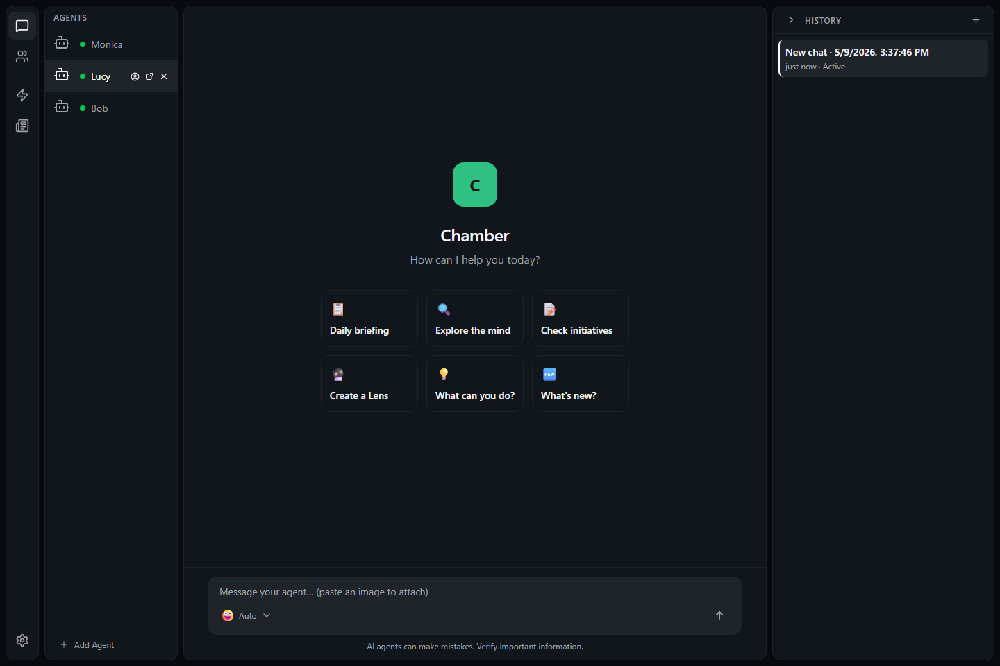

Open the mind list
Use the mind area in Chamber to view available minds.
 CHAMBER
GitHub
CHAMBER
GitHub
Minds
A mind is an AI helper with its own name, profile, conversations, and working style. Use different minds for different projects, roles, or routines.
A mind is a dedicated assistant inside Chamber. It can remember its own conversations, follow its profile, and help with the kind of work you assign to it.
Switching minds changes which assistant you are talking to. The chat, history, and related details update for the selected mind.

Use the mind area in Chamber to view available minds.
Choose the mind you want. Its current conversation area appears.
Make sure the visible mind name matches the work you are about to discuss.
Add a mind when you want a separate helper. Remove a mind when you no longer need its setup or conversations.
Pop-out windows let you keep a mind visible while you work elsewhere. This is helpful when you want a separate assistant window on another screen or beside another app.
A profile tells a mind how it should present itself and what kind of help it should provide. An avatar makes the mind easier to spot at a glance.
If Chamber offers Microsoft profile import, use it to fill in profile details from your Microsoft account instead of typing them manually.
Open the profile area and choose the Microsoft profile import option.
Check the name, photo, and details before saving them to the mind.
Keep only the details you want Chamber to use for this mind.
Removing a mind or changing its profile can affect future conversations. Read confirmations, keep work in the correct mind, and avoid putting passwords or private credentials in a mind profile.